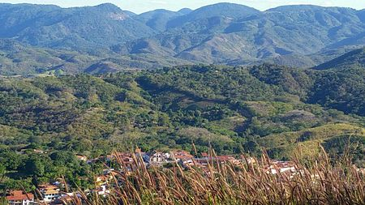

Geoinfos
Informações técnicas sobre relevo, população, IDH etc.
| INFORMAÇÕES | |
|---|---|
| Municípios limítrofes | Norte: Maranguape, Leste: Guaiúba, Sul: Redenção, Guaramiranga e Pacoti, oeste: Caridade |
| Fundação | 6 de novembro de 1862 (158 anos) |
| Área total | 117,814 km² |
| Clima | Tropical úmido |
| IDH | 0,650 — médio |
| PIB | R$ 47,174 mil |
| INFORMAÇÕES TERRITORIAIS | |
|---|---|
| Número de habitantes | 13 322 habitantes |
| Superfície de Palmácia |
11 781 hectares
117,81 km² (45,49 sq mi) |
| Densidade populacional | 113,1 ha./km² |
| Altitude de Palmácia | 369 metros de altitude |
| Coordenadas geográficas decimais |
Latitude:
-4.15136
Longitude: -38.8474 |
| Coordenadas geográficas sexagesimais | Latitude: 4° 9' 5'' Sul , Longitude: 38° 50' 51'' Oeste |
| INFORMAÇÕES DO MUNICÍPIO | |
|---|---|
| Endereço da Prefeitura Municipal de Palmácia |
Palmácia
Prefeitura de Palmácia
Pça. 7 de Setembro, 637 Palmácia - CE, 62780-000 Brasil |
| Telefone da prefeitura |
(85) 3339-1182
Internacional: +55 85 3339-1182 |
| Fax |
(85) 3339-1174
Internacional: +55 85 3339-1174 |
| Endereço electrónicoda prefeitura |
palmacia@secrel.com.br
|
| Site oficial do município | palmacia.ce.gov.br |
| INFORMAÇÕES DO ADMINISTRATIVAS | ||
|---|---|---|
| Prefeito de Palmácia | DAVID CAMPOS MARTINS | |
| Partido politico | MDB | |
| INFORMAÇÕES DE TRANSPORTE | |
|---|---|
| Transporte urbano disponível | - |
| Aeroporto |
Aeroporto Internacional Pinto Martins 54.5 km
Aeroporto de Sobral
173.6 km
Aeroporto Dix-Sept Rosado
201.9 km
|
| INFORMAÇÕES DE DISTÂNCIA A OUTRAS CIDADES | ||
|---|---|---|
| São Paulo : 2316 km | Rio de Janeiro : 2140 km | Brasília : 1632 km |
| Salvador : 982 km | Curitiba : 2618 km | Belo Horizonte : 1830 km |
| Manaus : 2356 km | Fortaleza : 59 km mais perto | Recife : 618 km |
| Goiânia : 1799 km | Belém : 1115 km | Porto Alegre : 3161 km |
| Guarulhos : 2294 km | Campinas : 2267 km | São Luís : 633 km |
| Distância calculada em linha reta! | ||
Fonte: Wikipedia e Cidade Brasil
História
Conheça mais sobre a história de Palmácia.
Primeiros indícios de ocupação e a fundação do Arraial das Palmeiras
A região em que hoje se situa o município de Palmácia começou a ser ocupada ainda no século XVIII, quando uma grande seca atingiu todo o estado do Ceará e todo o Nordeste Brasileiro,os índios da etnia baturité foram se refugiar na região serrana onde hoje é Palmácia,sendo o primeiro indício de ocupação da terras palmacianas, porém após a seca muitos dos índios baturités retornaram a seu lugar de origem e assim a fundação do futuro município de Palmácia só teve início anos depois devido a ocupação de sobras das sesmarias nas encostas da região do Maciço de Baturité. As primeiras notícias dessa ocupação são do final do primeiro quartel do século XVIII, nos meados de 1775 já existiam povoados criados por diversas localidades do maciço, por ocasião da seca de 1825.
Um ramo de dois clãs importantes do povoamento cearense (Queirós e Sampaio), concorreram para a formação do novo núcleo familiar da região,sendo o principal meio de transporte da época burros e jumentos dos tropeiros ou comboieiros, que viviam de fretes e eram os maiores desbravadores da serra,na medida que os tropeiros avançavam nas regiões desconhecidas eram encontradas novas trilhas usadas pelos índios. A principal razão que fizeram os tropeiros desbravar região foi que ao encontrarem uma trilha que vinha de Aratuba e passava pela região do Arraial das Palmeiras e que era usada pelos índios fazia com que a viagem a capital fosse mais rápida,fazendo que a cada dia essa rota fosse mais usadas pelos tropeiros,uma destas existe até hoje é conhecida é o manancial d'água conhecido como Bica, ponto obrigatório de parada dos tropeiros para beberem água e darem aos animais meio a viagem de transporte do babaçu e do côco. Assim, surgiram os cortadores de palmas, fazendo nascer os pequenos povoados de pequenas choças, os povoados iam se expandindo a cada dia com barracas de palhas e foram eles, os tropeiros, que colocaram o primeiro nome da região de Arraial das Palmeiras.
A Seca dos três setes e a construção do Açude da Comissão

D. Pedro II reinou de 1831 a 1889 ano em que foi deposto,seu reinado foi de estabilidade e muito próspero. O Ceará em seu reinado era um estado com fronteiras ainda bastante indefinidas. Palmácia, nessa época chamada de Palmeiras, não passava de um monte de casas, era uma vila. A Seca dos Três Sete (1877, 1878 e 1879) arrasou o Estado e Palmácia sofreu muito com ela, para resolver o problema, D. Pedro II mandou que se fizesse a construção de açudes sendo o da Comissão um deles, em virtude da Comissão Científica do Nordeste.
O Imperador não mediu esforços para a resolução do problema ele proferiu a frase: "Se preciso for venderei até a última pedra de brilhante da minha coroa para que nenhum brasileiro morra de fome." As obras foram iniciadas em 1878, quando o Imperador ordenou que se abrissem frentes de trabalho para livrar o povo da fome e da sede. Palmácia, na época chamado Palmeiras, distrito de Maranguape, foi, portanto, visitado pela citada comissão que estudou a possibilidade de construção do açude; o mesmo foi de fato edificado, durante três anos, e, após sua inauguração, passou a ser chamado de Açude da Comissão.
Pontos Turísticos
Saiba mais sobre os melhores lugares e o que fazer em Palmácia.
Pedra do Bacamarte
A Pedra do Bacamarte e simbolo de Palmacia e e um dos melhores locais para a pratica do ecoturismo no Ceara. Trilha em meio a Mata Atlantica e um visual surpreendente de todo o Macico de Baturite.
Penhasco São João
Cachoeira das Lajes
Cachoeira do Oratório
Como Chegar?
Veja como chegar nos melhores pontos de Palmácia.